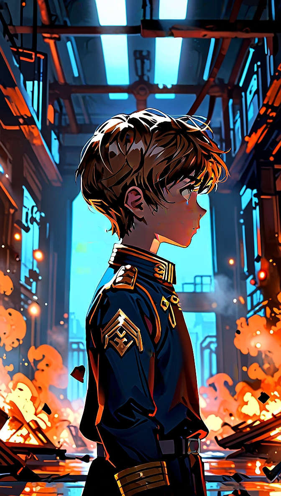
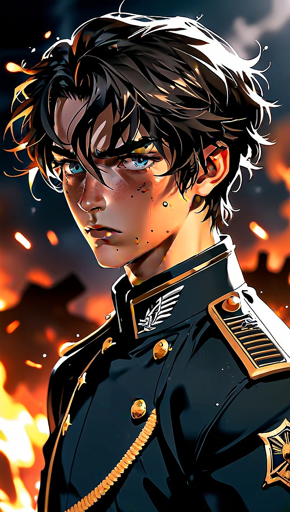
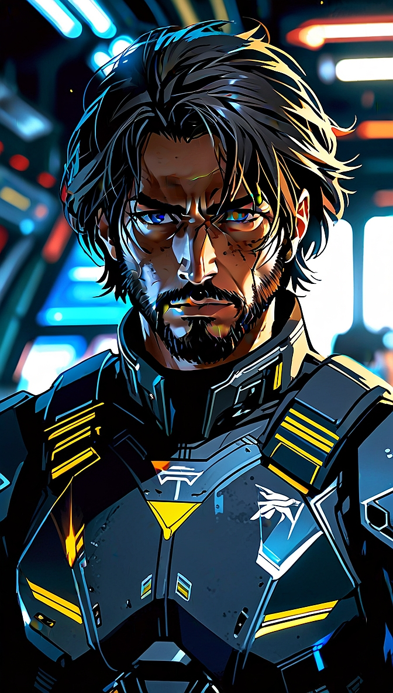
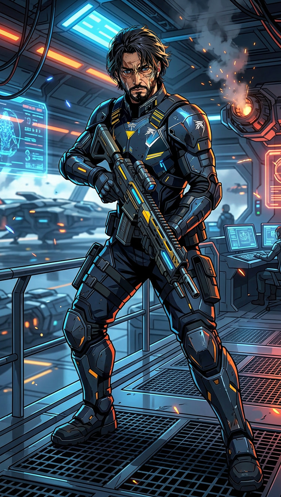

MEMBRI PHOENIX ELITE GROUP
ZELTHARIAN WARDEN
Infanzia - ERA I

3286 - Attentato alla Casata Warden
Nato sul pianeta Topaz, nel sistema Facece, Zeltharian Warden apparteneva a una delle
antiche casate nobiliari dell'Impero. Fin dai primi anni di vita ricevette un'educazione
improntata ai valori dell'onore, della disciplina e del servizio, crescendo all'interno
di una famiglia destinata a ricoprire un ruolo di rilievo nella società imperiale.
Quella serenità ebbe però una fine improvvisa. Ancora bambino, la dimora della Casata
Warden fu distrutta durante un violento attacco che gli portò via la famiglia e il
futuro che gli era stato destinato. Salvato all'ultimo istante da Anders Blaine, fu
costretto ad abbandonare tutto ciò che conosceva, iniziando una lunga lotta per la
sopravvivenza.
Adolescenza - ERA II

3294 - Zeltharian cadetto dell'Impero
L'adolescenza di Zeltharian fu segnata dalla prigionia presso Yu Relay, dove trascorse
anni difficili che temprarono il suo carattere. In un luogo dominato dalla paura imparò
che la forza non nasce dalla rabbia, ma dalla capacità di resistere senza perdere la
propria umanità. Quegli anni trasformarono il giovane erede imperiale in un uomo
determinato a costruire il proprio destino.
La libertà arrivò durante il caos seguito a un devastante attacco Thargoid. Fuggito
dalla prigionia, iniziò la carriera di pilota indipendente, attraversando la galassia
alla ricerca di una nuova identità. Missione dopo missione acquisì esperienza, prestigio
e la fiducia di altri comandanti che condividevano i suoi stessi ideali.
Adulto - ERA III

3297 - Zeltharian comandante PEG

3312 - Zeltharian e Codename: Tactical Takedown
Da quell'incontro nacquero i Phoenix Elite Group (PEG), una comunità
nata non dal desiderio di potere, ma dalla volontà di creare un luogo dove comandanti
provenienti da ogni angolo della galassia potessero trovare uno scopo comune. Dopo anni
trascorsi a sopravvivere nell'ombra, Zeltharian comprese che la vera forza non risiedeva
nella ricchezza, nel rango o nel nome di una casata, ma nei legami costruiti tra coloro
disposti a combattere fianco a fianco.
I primi membri dei PEG furono uniti dagli stessi ideali che avevano guidato Zeltharian
durante tutta la sua vita: lealtà, cooperazione e rispetto reciproco. Non una semplice
organizzazione militare, ma una fratellanza di comandanti accomunati dalla volontà di
esplorare la galassia, proteggere i propri alleati e affrontare insieme le minacce che
incombevano sull'umanità.
Sotto la guida di Zeltharian, i Phoenix Elite Group iniziarono lentamente a crescere,
trasformandosi da piccolo gruppo di piloti indipendenti in una realtà riconosciuta nello
spazio abitato. Le missioni commerciali, le spedizioni esplorative e le operazioni
strategiche permisero ai PEG di costruire una propria identità, basata sulla disciplina
ma anche sulla libertà dei propri comandanti.
La strada di Zeltharian non fu però priva di nuove difficoltà. Il ritorno della minaccia
Thargoid mise nuovamente l'umanità davanti a una guerra per la sopravvivenza. Per il
comandante Warden quella battaglia rappresentava qualcosa di più di un semplice
conflitto: era il momento in cui ogni esperienza vissuta, ogni perdita subita e ogni
sacrificio affrontato trovavano un significato.
Guidando i PEG attraverso operazioni militari, campagne di supporto e missioni contro la
minaccia aliena, Zeltharian dimostrò che un comandante non viene definito soltanto dalle
vittorie ottenute, ma dalla capacità di proteggere coloro che hanno scelto di seguirlo.
Il ragazzo che un tempo aveva perso tutto era diventato una guida per altri piloti che,
come lui, cercavano un posto nella vastità della galassia.
Oggi Commander Zeltharian Warden continua a guidare i Phoenix Elite Group con
determinazione, esperienza e spirito di servizio. Il suo nome non rappresenta più
soltanto l'eredità di una casata imperiale perduta, ma quella di una comunità costruita
attraverso anni di sacrifici e battaglie condivise.